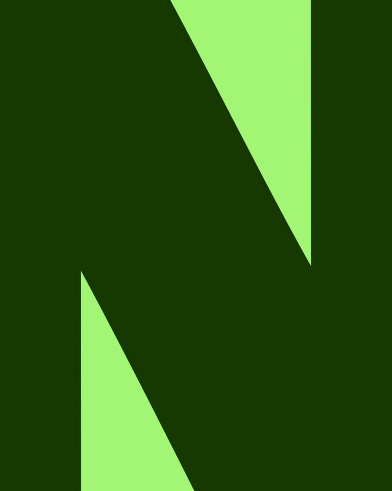
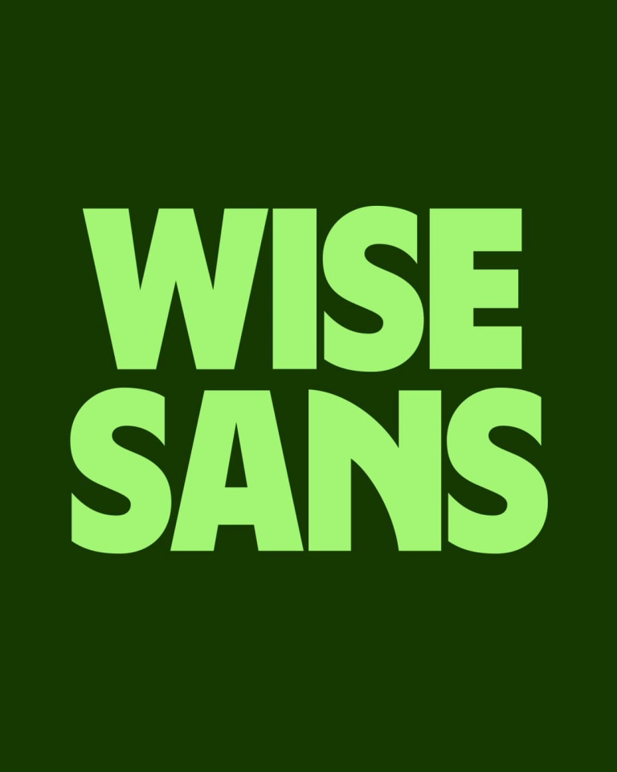
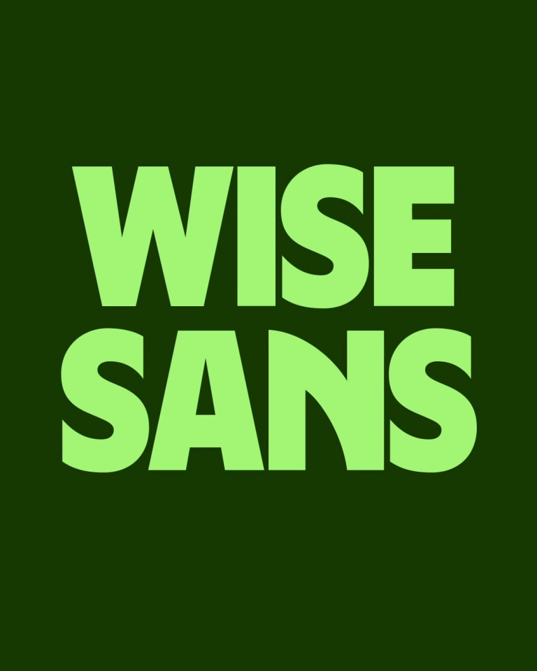

Wise / V401
Wise｜字体与货币符号动效
先说明字体从哪里来，再展示字形细节，最后把同一套字应用到不同货币和配色中。
构图与编排 可播放 · 可替换内容
整体编排规则示例
查看 HTML 源码
<!doctype html><html lang="zh-CN"><meta charset="utf-8"><meta name="viewport" content="width=device-width,initial-scale=1"><title>Wise｜字体与货币符号动效 · sequence</title><style>html,body{margin:0;width:100%;height:100%;overflow:hidden;background:#173d00}canvas{display:block;width:100%;height:100%;object-fit:contain}</style><body data-mode="sequence"><canvas width="1000" height="600"></canvas><script src="data.js"></script><script src="common.js"></script><script src="scene.js"></script><script src="bridge.js"></script></body></html>画面元素大字标题逐行句子圆角图像窗口放大字形字母表货币缩写
MOTION LANGUAGE
动作与构图
局部动作 · 构图规则
01
把完整句子拆成逐行增长
把完整句子拆成逐行增长规则示例
查看 HTML 源码
<!doctype html><html lang="zh-CN"><meta charset="utf-8"><meta name="viewport" content="width=device-width,initial-scale=1"><title>Wise｜字体与货币符号动效 · sequence</title><style>html,body{margin:0;width:100%;height:100%;overflow:hidden;background:#173d00}canvas{display:block;width:100%;height:100%;object-fit:contain}</style><body data-mode="clip" data-start="0.8" data-end="3.5"><canvas width="1000" height="600"></canvas><script src="data.js"></script><script src="common.js"></script><script src="scene.js"></script><script src="bridge.js"></script></body></html>主张每次新增一行，整体始终围绕版心组织。深绿与亮绿、白色互换，保持高对比和紧凑节奏。
02
从文字来源进入字形细节

素材窗口保持同一位置与圆角，内部文字快速切换。随后放大单个字母，让边缘超出画布，再收回完整字母表。
03
用应用色卡验证同一种字
用应用色卡验证同一种字规则示例
查看 HTML 源码
<!doctype html><html lang="zh-CN"><meta charset="utf-8"><meta name="viewport" content="width=device-width,initial-scale=1"><title>Wise｜字体与货币符号动效 · sequence</title><style>html,body{margin:0;width:100%;height:100%;overflow:hidden;background:#173d00}canvas{display:block;width:100%;height:100%;object-fit:contain}</style><body data-mode="clip" data-start="13.6" data-end="17"><canvas width="1000" height="600"></canvas><script src="data.js"></script><script src="common.js"></script><script src="scene.js"></script><script src="bridge.js"></script></body></html>每张色卡只留一个三字母缩写，字重和中心位置不变。背景与文字成对换色，快切形成应用范围。
04
替换内容也保留讲述顺序
适用于字体、视觉系统或符号系统发布：先命名，再给来源，再看结构，最后看应用。
SEQUENCE
段落与节奏
点击段落，定位到上方编排示意。


画面参考 · 离散静帧
KEEP THE RELATIONSHIPS
制作其他主题
- 替换品牌字体、主张、文字素材与行业缩写；保留名称→来源→细节→字符集→应用的叙事顺序。
- 标题保持极粗字重与紧凑行距；应用缩写以3个字符左右为宜。
制作约束
大字标题 / 逐行句子 / 圆角图像窗口 / 放大字形 / 字母表 / 货币缩写
- 开场给字体名称，接着逐行添加句子；新行推动已有文字重新分配高度。
- 用小圆角窗口连续更换真实文字素材，再把单个字母放大到出画，说明字形来源与细节。
- 最后从完整字母表切到多组货币缩写，不同色卡沿用相同字重和中心锚点。